01
J'ai fait vivre la course sur les réseaux
Comptes à rebours, présentation des étapes, têtes d'affiche, coureuses locales, partenaires, bénévoles, sécurité : un calendrier éditorial de plusieurs mois, puis une couverture en direct pendant les quatre jours. Voici un aperçu du feed.
@boucles2607Faun Tour Femmes
- abonnés Instagram
- 3 200
- abonnés Facebook
- 5 411
- vues cumulées
- 1,6 M
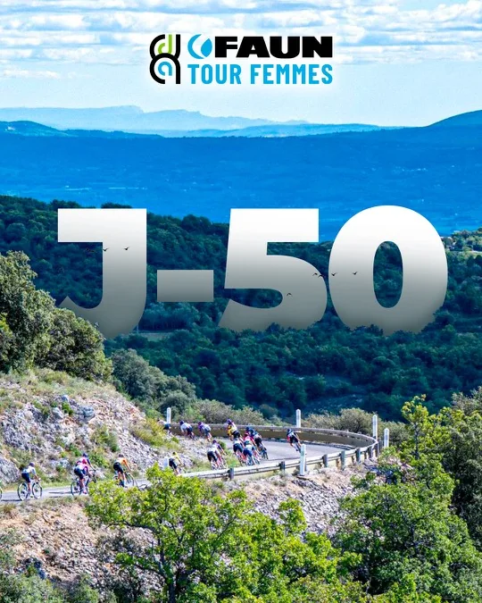
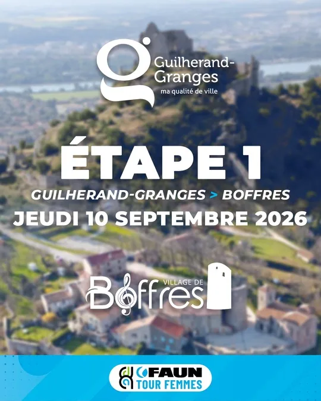
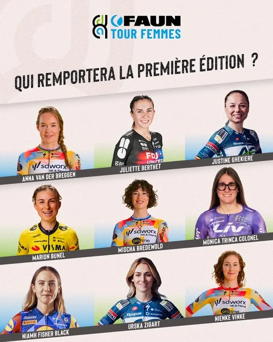
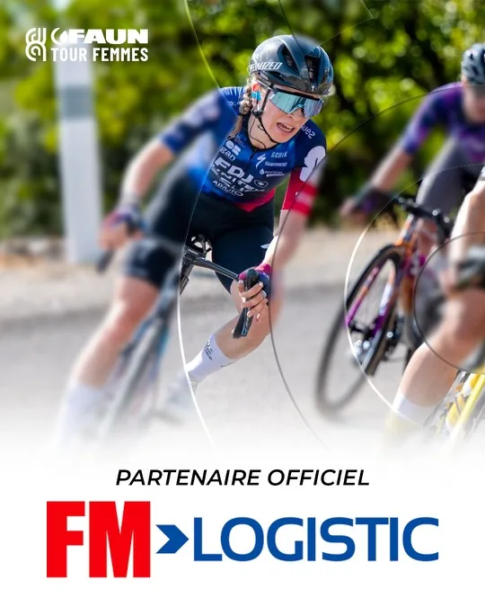
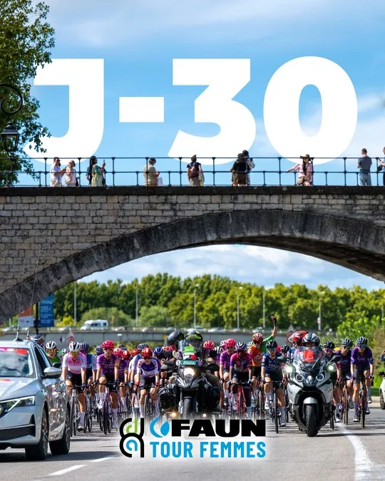
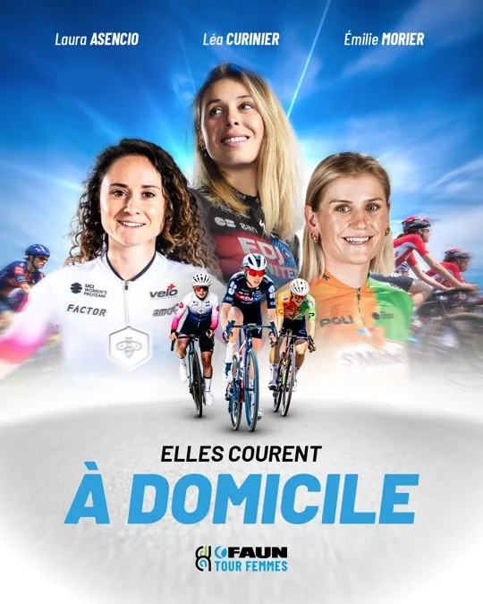
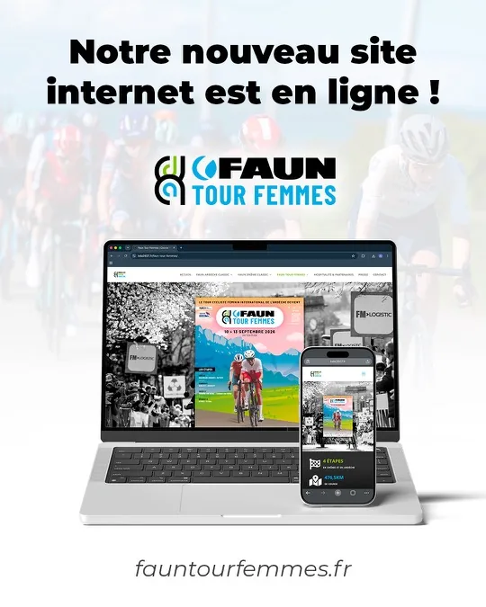
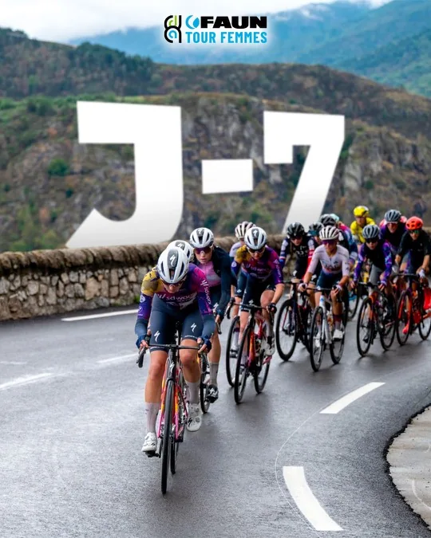
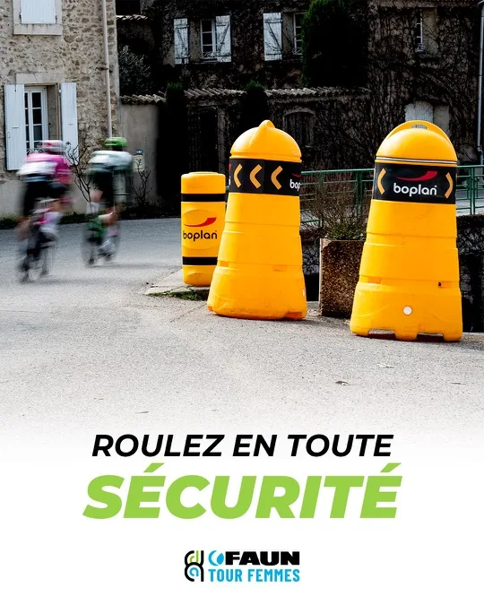
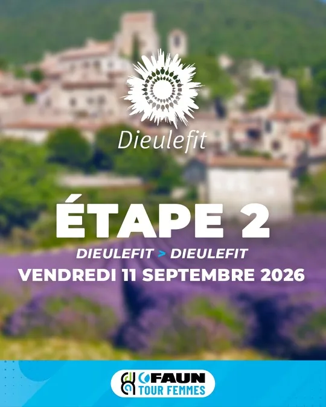
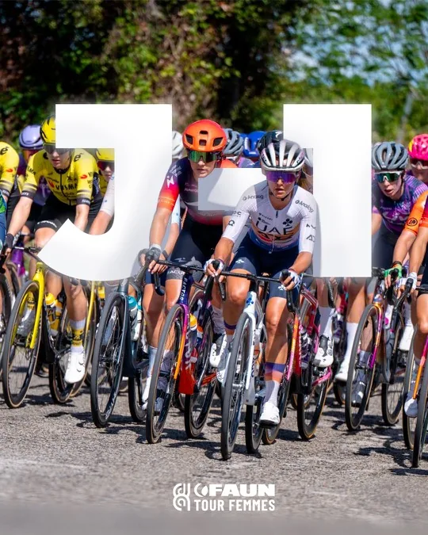
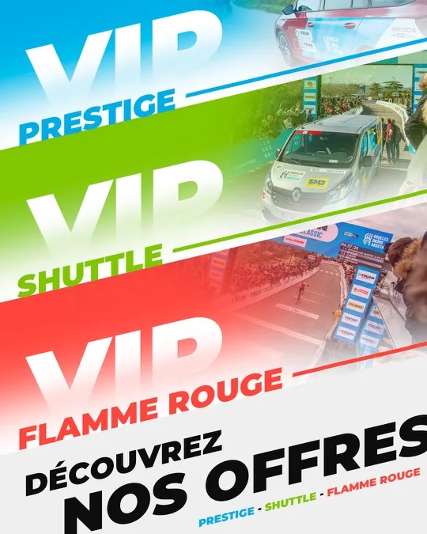